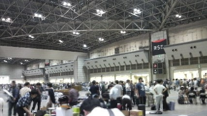
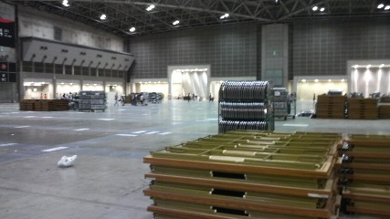
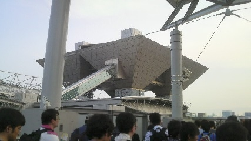
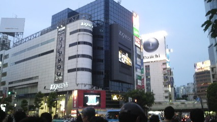
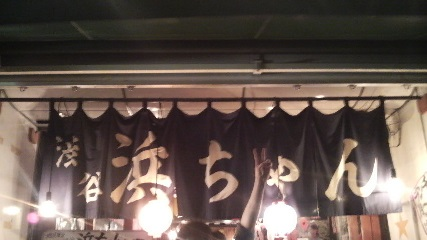
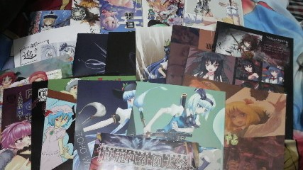
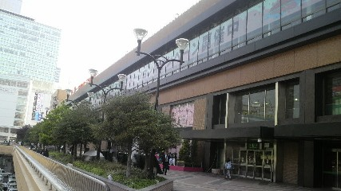

博麗神社例大祭 アフターフェスティバル
2013/05/26
はい、というわけでいわゆるオフ会ってやつに参加してきました。
例大祭後のオフ会参加は実は２回目で去年もryosiosさんのところのオフ会に出席させていただきました。
今回は募集も結構ギリギリで「あまり人を集めず１０人くらいで」とのことで少人数でのオフ会となりました。
・
・
・
例大祭自体は15:00ごろ閉会。
そこから例大祭が開催するアフター(なんとこのときだけ会場内で飲酒解禁！)を尻目に、
自分はオフ会に参加するryosiosさんところへ。
ryosiosさんはかなりの数のスケブを受けていらっしゃったようで、すさまじい速さで描いていました。
生放送でも拝見していましたがかなりの速筆。それでもスケブが３０冊ぐらいあって(おまえら頼みすぎｨ！)時間がない；；
アフターの時間もスケブを書き続け、業者の撤収が入るぎりぎりに終了。まじお疲れさまっす。
|  |
 |
| 撤収ムード |
なんということでしょう(ry |
この時間まで例大祭会場にいたのは初でした。
その後オフ会会場のお店がある渋谷へryosiosさんを含むその場にいた6人ほどで移動。残りの人はそのまま直接渋谷で合流する手はず。
国際展示場駅から渋谷駅へ、帰りの人多すぎｨ！

祭の後
渋谷到着

賑わう渋谷界隈
オフ会は１９時からでしたが渋谷へ着いた時点でまだ時間がある、とのことでゲーセン組と漫画喫茶組で分かれて時間を潰すことに。
自分は漫喫組で休憩しようかと思いそちらへ。ちなみに実は漫喫初めてだったりして、利用したことなかったんで。
漫喫組、ryosiosさんと雨宮さん、それと自分の３人小隊で渋谷を進む。うん、渋谷はなんとなく治安悪そうとの印象。
漫喫到着。ふむ意外とお安いのね。休憩にも使える。というか休憩目的だったけど。
ブースに入り、例大祭で買った先の『スコアを探して』を読・・・もうとしたところライトがつかない・・・
あれー？といろいろ試していたら偶然にも突然光った。なんだよ、接触感応式センサーライトかよ・・・ビックリさせんなよ・・・わかりにくい・・・
『スコアを探して』は小説の割りにはページ数が少なく、こういうスキマ時間でも読めるのがありがたい。
40分後集合、雨宮さん軽く寝てました。お疲れのご様子。ryosiosさんもテンションで保たせてる感じ。
自由に外に出て新鮮な空気の中休憩できた自分と違い、あの会場内にほぼずっといた絵師さん方の疲労は測り知れません。
再び渋谷駅に戻り、ハチ公口にて残りのオフ会参加を待つ。
ゲーセン組は先にお店に行っているとのこと。１９時になり少ししたところ全員集合(たいしたトラブルもなく全員集合できたのはすごいと思いません？)
お一人足が不自由な方がおりまして、松葉杖(補助具)を使っておりました。
まあとりあえず一同は駄弁りながらゆっくりとお店へ、お一人同じ宮城からきた方がいました。
ryosiosさんとともに震災話で盛り上がりました（いいのか！？
・
・
・
そして到着、居酒屋「浜ちゃん」

中には既にゲーセン組が集合済み。これで本当に全員集合です。
メンバーは、
ryosiosさん、
Reioさん、
天然さん、
雨宮礼夜さんと自分を含むryosiosニコ生リスナー勢６人の内訳。
席についてまず乾杯。自分は二十歳超えてますがお酒飲めないのでオレンジジュース。案外お酒飲む人はいないようで、いい時代になったものだ。
それからは楽しくお話させていただきました。
リスナー勢の方に関西出身(といっても三重県)がいて関東との違いを話したり、それぞれの嫁を発表したり（←
例大祭で手に入れた戦利品について話したり、絵師さんがたが用いる画法について話したり。それはもう楽しかったです。
絵師勢とリスナー勢でちょっと壁ができてたのが心残りでしたね。ていうかReioさんと天然さんは撃沈してました。お疲れ様でした。
お店の方は、こちらも大変満足で、品目は少ないものの量は十分でおいしかったです。
比較的ゆっくりとお食事できました。多くもなく少なくもなく、途中のタラの芽天ぷらが少々重かったぐらい。
ちょww店員さんがお姉さんだからって絡むのやめてくださいよwwあなたそんなに飲んでないでしょ素ですかwwww（関西リスナー）
他にもいろいろ書きたいことはあったはずですがここら辺で割愛。
・
・
・
楽しい飲み会も終わり、それぞれの現実へ。
終わった時間が21:30ごろで、新幹線の最終便が21:40。あ、無理だこれ、と判断して予防線として張っておいたG3宅へ再び厄介に。
この日は寝て、次の日に朝一の新幹線で帰れば講義に間に合う（２限 10:30〜）
G3宅へ行くために渋谷駅から池袋駅へ。同じ方面の天然さんと雨宮さんとともに山手線へ。
お二人は夏コミにも出すようですが自分は今年の夏コミはパスですかねー。
いやーしかし関東圏は山手線で主要都市が繋がってるから移動は楽でいいね。
G3宅、荷物整理も兼ねてシリカちゃんの上に戦利品を並べる。
ふむ、やはり今回は本だけしか見なかったから平坦だな。シリカちゃん。

戦果
ここにあるものは全てサークル紹介時に紹介したものなんで詳しくはそちらや各サークルさんのページへどうぞ。
今回も大漁であった。満足。
満足してたらいつの間にか寝てました。やはり自分にも疲労は溜まってたんでしょうねー。それでも5時前に起きましたが。
てなわけで翌日〜(2013/05/27)
計画通り朝一の新幹線に乗るために池袋駅から東京駅へ。
今回泊めてくれたG3君ありがとうねー。俺の数少ない友人で関東住みというのが災い(?)したな！（←
kaz君もサークルにちょくちょくお邪魔してすまんねぇ
・
・
・
お疲れ様でした！
今回関わった全ての人に感謝を！！
そして幻想から現実へ無事帰還！！！

旅の出発点でもあり終着点でもあった仙台駅
あとがき 2013/06/03
まだまだ書き足りないところもあるのですがとりあえず速度優先で書きあげようと思いました。
それでも手を抜いているつもりはまったくないので、ここまでつきあって読んでくださったみなさまにも感謝です！
東方に限らず、こういった同人イベントは独特の雰囲気と強烈なパワーをもっていると思います。
この文化は絶対に無くしてはいけないと思い、その記録としてもこの記事を残したいと思いました。
最近は同人界隈に対する風当たりも芳しくない風潮がまたあらわれはじめていて、軽い危機感をおぼえています。
一人一人ができること、規律を守り、その中で自分を表現する。とても大切なことだと思います。
例大祭のカタログには各種注意書きが書いてあるのですが、その中で一番重要だと思うのは「客も店もない」ということだと思います。これに尽きる。
「客も店もない」、つまり全員が平等で一般参加者とサークル参加者が力を合わせてイベントを創りあげていく。この精神は昨今の世の中にも必要なものではないでしょうか。
お互いに助け合い、好きなものを追求する。すばらしいことだと思います。
最後に、余計なことまで口走った感がありますが、
もう一度例大祭に参加したみなさん、スタッフのみなさん、オフ会勢のみなさん、リア友達、
そしてここまで読んでくださった...and you に感謝を！！！
2013/06/03 written by shift
旅行記 メニューへ戻る